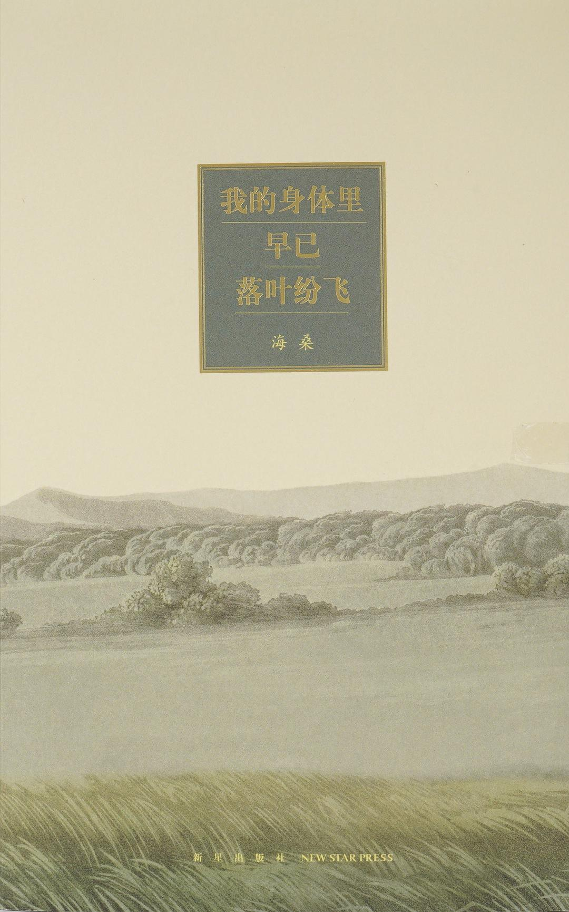

我的身体里早已落叶纷飞

8.7
★★★★★
豆瓣评分 · 5,800 人评价
隐士诗人海桑走向中年与生命深秋的沉静之书，在落叶纷纷的岁月苍茫中，打捞灵魂历经风霜洗礼后的澄澈与深情。
总体观点
《我的身体里早已落叶纷飞》是诗人海桑在步入不惑之年、体察到生命机能放缓与岁月深秋来临后写就的一部沉潜厚重之作。相较于早年诗歌中对草木春光的雀跃欢喜，这部诗集更多流淌出一种如深潭般幽邃、静穆而坚韧的秋意哲学。
海桑以极其诚实克制的笔触直面衰老、离别与死亡的临近。书名‘我的身体里早已落叶纷飞’并非绝望的哀叹，而是一个通透者对生命自然律动的全然接纳——秋叶的凋零是为了让枝干更清晰地直面冬日苍穹，生命的减法是为了给内心的纯粹腾出空间。作者在深秋冷雨与炉火余温中，为每一个行至中年、倍感疲惫的灵魂注入坚如磐石的平静力量。
核心观点
-
1. 秋天作为生命成熟与去伪存真的金色熔炉
告别青年时期的狂热躁动与虚荣算计，生命在衰退的表象下迎来内省的黄金时期，唯有真正重要之物留在心底。
《这一年又到了深秋》：‘树木脱去了繁琐的叶子，露出黑瘦坚硬的骨骼；我也脱去了多余的欲望，终于看清了自己的心。’ -
2. 身体作为大自然时序更替的微观地理标本
肉体的斑驳皱纹、发白的鬓角与关节的隐痛，与大地上飘落的枯叶同频共振，是宇宙规律在人身留下的尊严印记。
同名篇中写道：‘我的身体里早已落叶纷飞，每一片落叶都是一段走过的好时光，它们在泥土里化作腐殖质，安安静静。’ -
3. 相濡以沫的黄昏相守：爱是两棵老树在风中的无声依偎
中老年的爱情不再需要激情的誓言，而是在对方生病时端上的一碗热姜汤，在漫长寒夜里彼此抚平冻疮的默契。
《亲爱的，别怕我们慢慢变老》：写妻子鬓角的白发如清晨的初霜，诗人在灯下轻轻替她拔去，又相视而笑决定任其生长。 -
4. 与不完美世界的大和解：深爱这充满裂痕的人间
不再苛求世界毫无瑕疵，看清了世态炎凉与命运的捉弄之后，依然愿意伸出双手紧紧拥抱这个粗粝的世界。
《抱一抱这不完美的人间》：‘人间有苦难，有人情冷暖，可这里也有烤白薯的香气和孩子的笑声，我依然愿做人间的过客。’ -
5. 大雪封山前的宁静顿悟：以圣洁白雪覆盖一生风尘
将生命的最后归宿视作一场漫天洁白的大雪，风尘仆仆的旅人终于能够停下脚步，在永恒的大地怀抱中安详阖眼。
全集收官诗篇描写冬夜大雪：‘落吧，好雪，把所有的路途都掩盖吧，大地干干净净，像一个刚刚降生的婴儿。’
全书结构
-
第一辑 这一年又到了深秋：时序流转中的生命警钟
从秋风乍起、落叶飘零写起，记录中年人在节气转换中对生命有限性的敏锐察觉与庄严自省。
描写院落里的老槐树在昨夜一场秋霜过后落了满地黄叶，诗人清晨执帚清扫，听见扫帚与石板摩擦的沙沙声。 -
第二辑 我的身体里早已落叶纷飞：衰老的尊严与通透
聚焦肉身衰退的微观体验，以豁达幽默的语调直面老花眼、白发与疲惫，将肉身的凋零升华为精神的轻盈。
读同名篇章，分析海桑如何运用‘落叶如雨’的隐喻，把衰老描绘成一首庄严雄浑、毫无自怜哀怨的交响诗。 -
第三辑 亲爱的，别怕我们慢慢变老：老夫老妻的柴米深情
献给相濡以沫数十年的结发妻子，记录平淡岁月中两颗斑驳的心灵在风霜中的深情依附与互慰。
冬夜炉火旁，老两口并排坐着泡脚，热水冒着白气，没有交谈却能听见彼此平稳的心跳，温情流淌。 -
第四辑 抱一抱这不完美的人间：慈悲俯瞰尘世的苦痛欢喜
将目光投向医院走廊、菜市场打折区与风雨中的修车摊，向每一个在生活重压下坚韧前行的同胞致敬。
写雨夜中骑三轮车送货的苍老汉子，雨披被风吹起依然拼命蹬车，诗人驻足目送并默默在心底为他祈祷平安。 -
第五辑 最后的星光与无声的大雪：走向终章的圣洁安详
全书精神的高潮与归宿，将死亡还原为宇宙大自然最纯净温柔的摇篮，给一生劳碌的灵魂奉上最深沉的安魂曲。
最后一首诗写冬至夜的大雪覆盖了旷野麦田，诗人在黑暗中吹灭蜡烛，与浩瀚无垠的宇宙星辰融为一体。